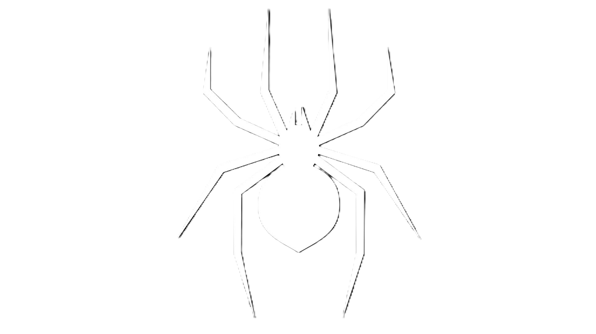
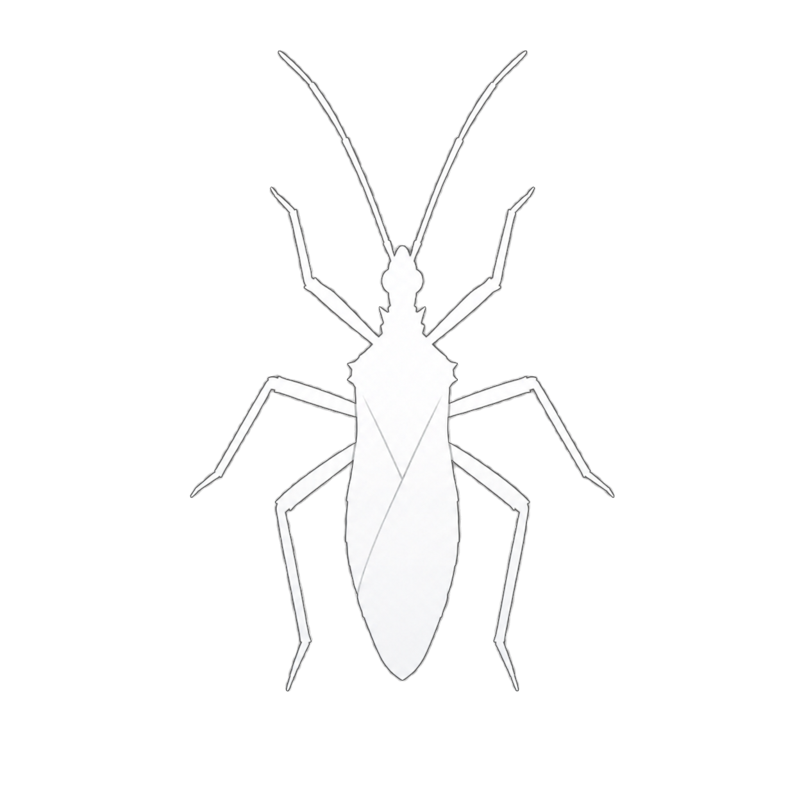
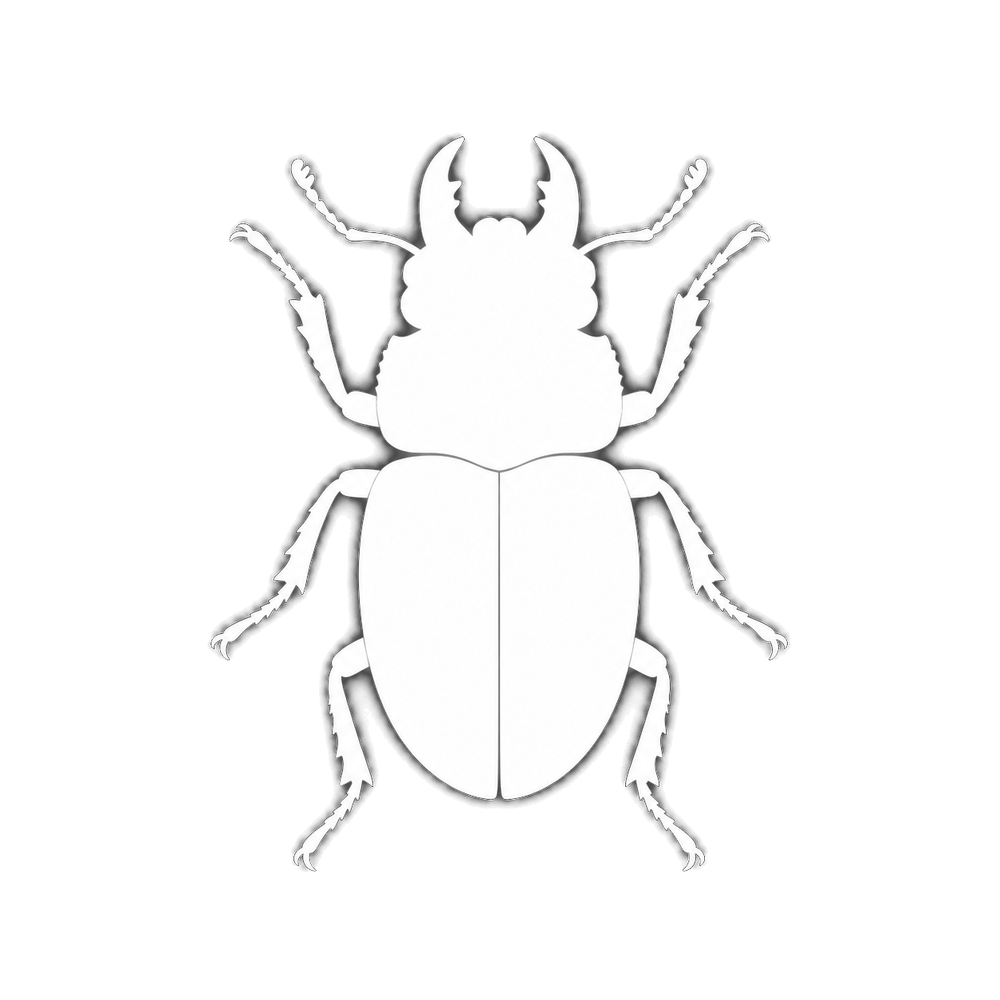
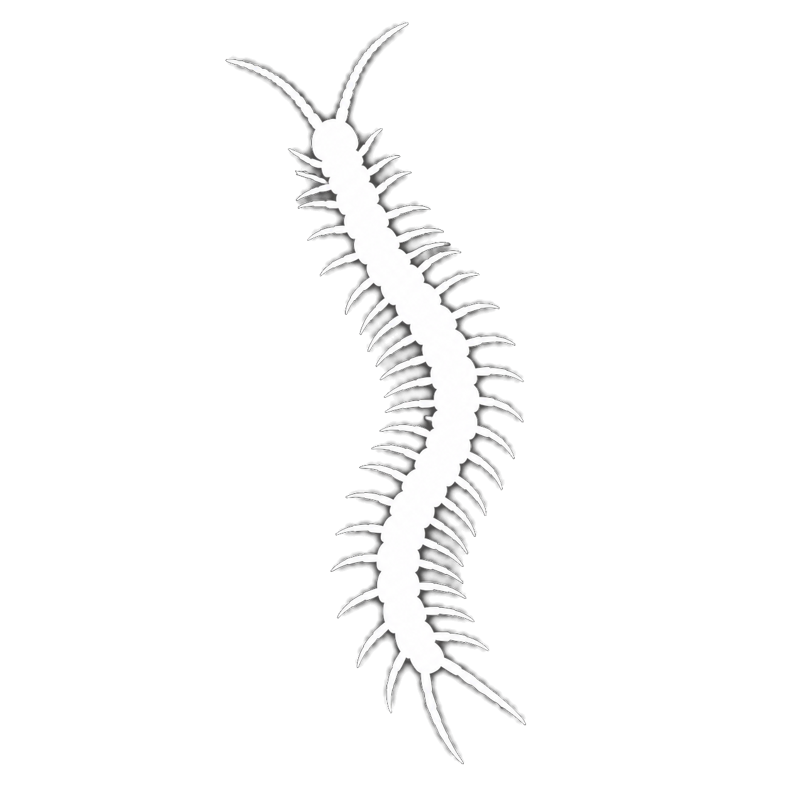
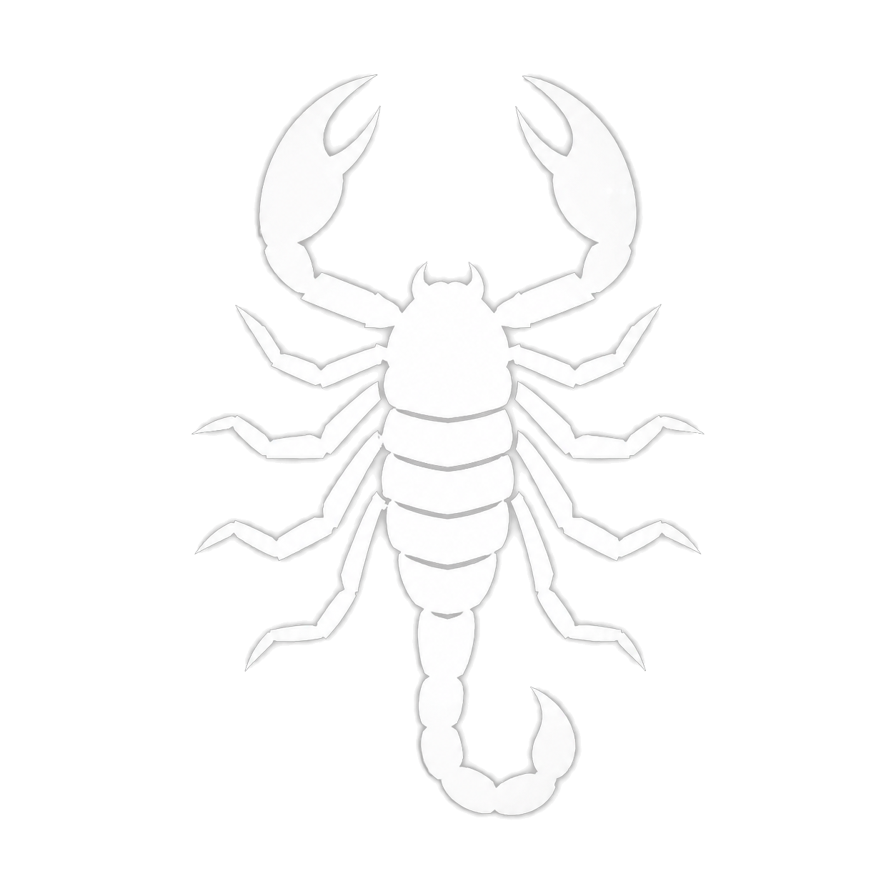

Link to a public page
Share the page URL on social media, in messages, or in reading lists. Linking helps viewers keep the photograph, caption, animal identity, and surrounding context together.
Photography & image use
The photographs are part of the record of real animals, field encounters, and husbandry work behind Introvertebrates. A public webpage is not the same as a public-domain image library.
Default position
Unless an item carries a different credit or licence, original Introvertebrates photographs, video frames, artwork, and text are protected by copyright. Copying, reposting, editing, publishing, or commercial use requires written permission.
Share the page URL on social media, in messages, or in reading lists. Linking helps viewers keep the photograph, caption, animal identity, and surrounding context together.
Educational, editorial, scientific, exhibition, and other non-commercial requests are welcome. Permission is not automatic, because each photograph may have different identification, welfare, or third-party considerations.
When permission is granted, the required credit will normally include “Introvertebrates,” a link to the source page, and the animal or species name where known.
Permission requests
Include enough detail to make a clear decision:
Email erlend@introvertebrates.com. A written reply granting a specific use is required before publication.
Credits & exceptions
Embedded YouTube and Instagram posts remain subject to their platform and creator terms. Cited research figures, external links, commissioned artwork, and any item with an individual credit or licence are governed by the notice attached to that material.
Image honesty
Real, verified photographs remain the priority. When a future public record has no suitable image, Introvertebrates may use one of these broad-group silhouettes. It will be labelled as a placeholder and must not be read as showing the species, sex, life stage, markings, or named individual.





Current collection: every public collection card presently has a verified photograph. The placeholders are fallback assets for future app-synced records or a temporarily unavailable image; they never silently replace a named animal with a different animal.